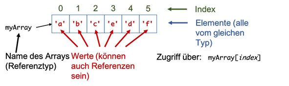
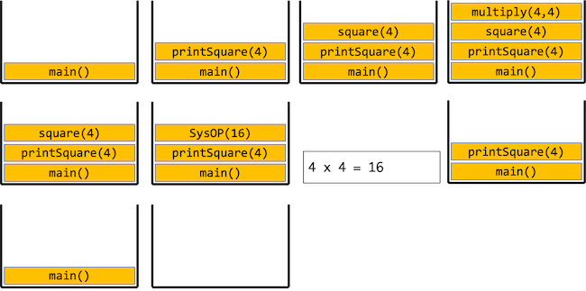

Wiederholung¶
Datentypen¶
Wertetypen¶
- es wird der konkrete Wert in der Variablen gespeichert
- belegen abhängig vom Datentyp unterschiedlich viel Arbeitsspeicher → unterschiedliche Wertebereiche
// boolean für Wahrheitswerte true und false
boolean x = false; // mit false initialisiert
boolean wahr = true; // Schluesselwort true
boolean falsch = !wahr; // Enthaelt den Wert false
// byte, short, int, long für ganze Zahlen
byte a = 0; // mit 0 initialisiert
short b = 124; // Zuweisung einer ganzen Zahl
int c = a + b; // Wertebereich immer beachten!
long lo = c * 200; // l nicht als Variablenname verwenden
// char für ein einzelnes Zeichen - einfache Anfuehrungszeichen!
char zeichen = 'c'; // Doppelte " für Strings!
// float und double für Fließkommazahlen
float f = 0.0f; // Wird mit 0.0 initialisiert
double d = 100.25; // Dezimalpunkt statt Dezimalkomma!!
Referenztypen¶
- es wird eine Referenz auf ein Objekt gespeichert
- Objekte besitzen Eigenschaften: Methoden (Verhalten) und Variablen (Zustand)
- Zugriff auf Methoden und Variablen über den Punkt-Operator
// Schluesselwort class um neue Klasse (Typ) zu definieren
public class Power
{
int base; // Objektvariablen, für jedes Objekt
int exp; // existieren Kopien im Arbeitsspeicher
public Power(int base, int exp)
{
this.base = base;
this.exp = exp;
}
// Objektmethode
public void print()
{
System.out.println(this.base + "^" + this.exp);
}
}
// irgendwo im Hauptprogramm
public static void main(String[] args)
{
Power p1 = new Power(2,4);
Power p2 = new Power(2,4);
p1.print();
p2.print();
boolean equal = (p1 == p2); // true oder false ?
}
Datenstrukturen¶
Variablen¶
- einfachste Datenstruktur → speichern genau einen Wert (kann auch Referenz auf ein Objekt sein)
- sind von einem Datentyp (Wertetyp oder Referenztyp)
- haben einen Namen
- besitzen einen Wert
- Wert kann sich bei Variablen zur Laufzeit ändern (Wertzuweisungsoperator =)
- Wert von Konstanten kann nicht mehr geändert werden (final)
- besitzen einen Gültigkeitsbereich (den sogenannten Scope)
- Scope einer Variable: der Anweisungsblock, in dem die Variable deklariert wurde
- lokale Variable: in einer Methode deklariert → dort lokal
- globale Variable: in einer Klasse deklariert → dort global
int zahlen = 0; // konventionelle Variable
final float PI = 3.14516f; // Konstante
// Erzeugen eines neuen Feldes (Arrays) und Zuweisen der Referenz
int[] zahlenFeld = new int[100];
// Klassen mit Objekt- und Klassenvariablen
public class Power
{
int base; // Objektvariablen, für jedes Objekt
int exp; // existieren Kopien im Arbeitsspeicher
public Power(int base, int exp)
{
this.base = base;
this.exp = exp;
}
public String toString()
{
// lokale Variable --> nur in der Methode gueltig
String output = this.base + "^" + this.exp;
return output;
}
// Variablen sollten mit einem Kleinbuchstaben beginnen
// Konstanten sollten nur mit Großbuchstaben benannt werden
}
Arrays¶

- Arrays sind Objekte (Referenztypen)
- speichern eine festgelegte Anzahl von Werten eines festgelegten Datentyps (können Werte- und Referenztypen sein)
- besitzen Methoden (z.B.
sort()) und Variablen (z.B.length) - können auch mehrdimensional sein
- Zugriff auf Elemente mit eckigen Klammern unter Verwndung des Indexes
// Einfache Deklaration -> nur Datentyp bekannt, keine Laenge
int[] zahlen; // Eckige Klammern für Array-Datentyp
// Erzeugen eines neuen Feldes und Zuweisen der Referenz
zahlen = new int[100]; // new-Operator, hier: Angabe der Laenge
// Explizite Initialisierung bei der Deklaration
// Bei Initialisiert mit Werten --> keine Laengenangabe noetig
float[] werte = new float[10]; // Platz für 10 Werte
double[] fib = { 1.0, 2.0, 3.0 }; // Werte in {}-Klammern
// Mehrdimensionale Felder
int[][] hdBild = new int[1920][1080];
// Felder können für alle Datentypen verwendet werden
Power[] potenzen = new Power[5]; // Noch keine Objekte enthalten
potenzen[0] = new Power(2, 4); // Zuweisung Objekt an Index 0
Literale¶
- sind Werte
- sind von einem bestimmten Datentyp (kann auch ein Referenztyp sein)
- keine ausführbare Einheit → kein Ausdruck → können nicht alleine stehen
- meistens
- auf der rechten Seite einer Wertzuweisung
- als Parameterwert bei Aufruf einer Methode
- als Vergleichswert bei logischen Ausdrücken
100
true
'a'
"hallo"
{1,2,3,4}
5.5
Ausdrücke¶
- kleinste ausführbare Einheit eines Programms
-
z.B.:
- Zuweisung
- numerische Berechnung
- logische Bedingung
-
Operatoren:
- arithmetisch:
+, -, *, /, %, ++, -- - relational:
==, !=, <, >, <=, >= - logisch:
!, &&, || - Zuweisung:
=, +=, -=, *=, /=, %= - sonstige:
a?b:c, typecast, new, instanceof, .
- arithmetisch:
Anweisungen¶
- Einzelanweisung
; - Block
{} - Deklaration
Typ Methode,Typ Variable - Ausdruck
- Bedingung
if() else switch() case - Schleifen
for while do while - Exceptions
try catch() - Assertions
assert
// Bloecke immer zwischen geschweiften Klammern
{
// Anweisung 1...
// Anweisung 2...
}
// Definition und Deklaration
int a;
float b = 1.0f;
// Einfacher Ausdruck
a = 1010;
// Bedingungen
if (a == 1010) // if-Zweig muss immer vorhanden sein
{
// Anweisungen...
}
else if (a == 1011) // 0 - beliebig viele else-if-Zweige
{
// Anweisungen...
}
else // 0 - 1 else-Zweig
{
// Anweisungen...
}
switch (a) // zu pruefende Variable in Klammern
{
case 1010: { b*=2.0; break; } // beliebig viele case-Zweige
case 1011: { b*=3.0; break; } // break nicht vergessen
default: { b=0.0f; } // Zweig für alle anderen Werte
}
int[] meinFeld = {1,2,3,4,5};
// for-Schleife
// 1. Initialisierung
// 2. Schleifen-Bedingung
// 3. Anweisungen nach Schleifendurchlauf
// Schleifen-Anweisungen als Block hinter for
for (int index = 0; index < meinFeld.length; index++)
{
System.out.println(meinFeld[index]);
}
// while-Schleife
// Nur Schleifen-Bedingung angeben
// Auf Endlos-Schleifen achten
while (index < meinFeld.length)
{
System.out.println(meinFeld[index]);
index++;
}
Methoden¶
- wiederverwendbare und/oder logisch abgeschlossene Programmteile sollten in Methoden zusammengefasst werden
- Methoden besitzen einen Namen (im Scope eindeutig), keinen, einen oder mehrere Parameter und einen Rückgabetyp (evtl.
void) - Aufruf einer Methode durch Namen und runde Klammern, in welche Werte für die Parameter übergeben werden
- bei Aufruf einer Methode werden alle Anweisungen abgearbeitet, die in der Methode definiert (implementiert) wurden (bis zum
return) - werden Methoden mit Rückgabetyp (also nicht
void) aufgerufen, entspricht ihr Aufruf einem konkreten Wert (Rückgabewert)
public static int multiply(int a, int b) {
return a*b;
}
public static int square(int n) {
return multiply(n,n);
}
public static void printSquare(int n) {
int squared = square(n);
System.out.println(n + " x " + n + " = " + squared);
}
public static void main(String[] args) {
printSquare(4);
}

Vererbung¶
- Weitergabe aller Methoden und Objekte einer Elternklasse (Basisklasse) an eine Kindklasse (Subklasse)
- Schlüsselwort
extends - jede Klasse (bis auf
Object) besitzt genau eine Elternklasse; ist keine angegeben, ist es automatischObject - Vererbung beschreibt „is-a“-Beziehung
- Methoden der Elternklasse können überschrieben werden (wenn sie nicht als
finaldefiniert wurden) → @Override verwenden - Originalmethode kann mit Schlüsselwort
superaufgerufen werden
Konstruktoren¶
- besondere Objektmethoden, die beim Erzeugen des Objektes aufgerufen werden
- gleicher Name wie die Klasse, keinen Rückgabetyp angeben (auch nicht
void) - wird kein Konstruktor definiert, steht automatisch (implizit) ein parameterloser Konstruktor zur Verfügung (einzige Ausnahme: in der Elternklasse existieren nur parametrisierte Konstruktoren)
- Aufruf von
thisundsupermöglich - werden nicht vererbt
public class Power {
int base;
int exp;
public Power()
{
this(1,0); // Aufruf des Konstruktors in Zeile 15
}
public Power(int base)
{
this(base, 0); // Aufruf des Konstruktors in Zeile 15
}
public Power(int base, int exp)
{
this.base=base; // Parameterwerte für base und int
this.exp=exp; // auf Objektvariablen sichern
}
}
public static void main(String[] args) {
Power p1 = new Power(); // p1.base = 1, p1.exp = 0
Power p2 = new Power(10); // p2.base = 10, p2.exp = 0
Power p3 = new Power(10,5); // p3.base = 10, p3.exp = 5
}
Access Controller (Zugriffsmodifizierer)¶
- Steuerung der Lebensdauer, Sichtbarkeit und Veränderbarkeit von Klassen, Methoden und Variablen – Prinzip der Datenkapselung
-
Klassen
publicZugriff von außerhalb des Paketes- (default) Zugriff nur innerhalb des Paketes
finalvon der Klasse können keine Klassen erbenabstractKlasse besitzt Methoden, die keinen Methodenrumpf besitzen (nicht implementiert sind)
-
Variablen und Methoden (wenn Klasse
public)publicZugriff von überall (bei Variablen vermeiden!)protectedZugriff aus Klasse und Kindklasse- (default) Zugriff aus Klasse und Paket
privateZugriff nur aus Klasse
"Kleinigkeiten", die wir nicht betrachtet haben¶
Das Schlüsselwort static¶
Mit dem Schlüsselwort static beschreiben wir eine Eigenschaft der Klasse. Das Schlüsselwort static kann verwendet werden für
- Die Deklaration einer (Klassen-)Variablen. Eine Klassenvariable existiert für die Klasse genau ein Mal (alle Objekte der Klasse "teilen" sich diese eine Variable).
- Die Deklaration einer (Klassen-)Methode. Eine statische Methode (Klassenmethode) kann aufgerufen werden, ohne ein Objekt der Klasse zu erzeugen. Wir werden häufig statische Methoden in der Programmklasse (die Klasse mit der
main()-Methode) erstellen, um diese in dermain()-Methode aufzurufen, ohne vorher ein Objekt der Programmklasse erzeugen zu müssen. - Die Deklaration einer Klasse, wenn diese eine Klasse in einer anderen Klasse ist. Dazu kommen wir später.
Der Zugriff auf eine statische Variable bzw. statische Methode erfolgt ebenfalls per Punktnotation, aber vor dem Punkt steht dann der Klassenname. Häufig wird der Klassenname und der Punkt aber auch weggelassen.
Die for-each-Schleife¶
Wir haben ein Array stets so durchlaufen, dass wir in einer for-Schleife jeden möglichen Index für das Array erzeugt haben und dann über den Index auf den Wert der einzelnen Elemente zugegriffen haben, also z.B.:
int[] numbers = {1, 2, 3, 4, 5, 6, 7, 8, 9 };
for (int index = 0; index < args.length; index++)
{
System.out.print(numbers[index]);
}
Wenn wir alle Elemente eines Arrays lesen wollen, können wir das aber auch so machen:
int[] numbers = {1, 2, 3, 4, 5, 6, 7, 8, 9 };
for(int number : numbers)
{
System.out.print(number);
}
Wir bezeichnen diese Schleifensyntax auch als for-each-Schleife. Die allgemeine Syntax ist
for(TypElement variablenNameElement : nameDesArrays)
{
// hier lesende Verwendung von variablenNameElement
}
Beachten Sie, dass Sie mit der for-each-Schleife nur lesenden Zugriff auf die Elemente des Arrays haben. Wenn Sie z.B. schreiben
int[] numbers = {1, 2, 3, 4, 5, 6, 7, 8, 9 };
for(int number : numbers)
{
number = 5;
}
, dann ändert das nichts an den Werten im Array! Beachten Sie aber auch, dass das Element ja auch eine Referenz auf ein Objekt sein könnte, dann verhält es sich natürlich anders, wenn Sie dafür Objektmethoden aufrufen, die Änderungen am Objekt bewirken (Setter).
Die Klasse java.util.Arrays¶
Die Klasse Arrays aus dem java.util-Paket hat einige nützliche Methoden für Arrays. Insbesondere interessant dürfte die toString()-Methode sein. Wir werden diese Klasse manchmal verwenden, wenn wir uns z.B. keine eigenen toString()-Methoden für unsere Arrays schreiben wollen. Die Dokumentation der Klasse Arrays finden Sie z.B. hier. Beachten Sie, dass Sie zum Verwenden der Klasse das java.util-Paket importieren müssen.
int[] numbers = {1, 2, 3, 4, 5, 6, 7, 8, 9 };
System.out.println(Arrays.toString(numbers));
Weitere interessante Methoden dieser Klasse sind copyOf(), binarySearch() und sort().
Übung
Ist die `toString()`-Methode der `Arrays`-Klasse statisch oder handelt es sich um eine Objektmethode?